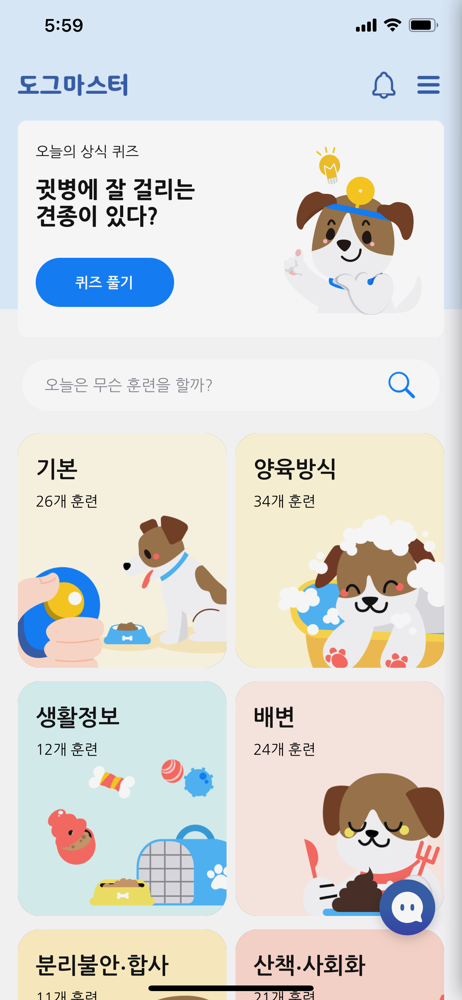
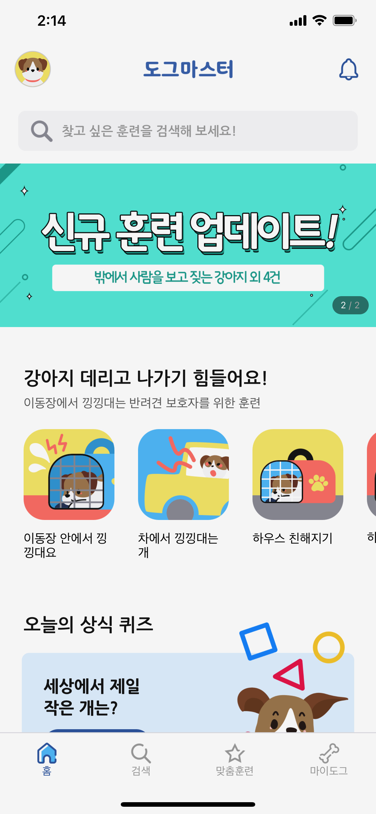

About
Walky Doggy Inc. provides a service that easily delivers information on raising and training dogs tailored to help all dog owners in South Korea to raise dogs correctly through their mobile application called Dogmaster. We produce our own content and provide it for free free to make it easier to learn parenting and training information. Moreover, we are in the process of solving the concerns of beginner owners and behavioral problems of dogs through a service that customizes parenting and training information necessary for the life cycle of users and dogs based on data.
Overall Changes
Role
Web Designer
Research
Tools
Home Screen
Previous Design
Previous Home Screen
Current Design
